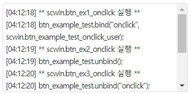

컴포넌트의 함수 'trigger'의 예제입니다. 함수 'trigger'는 이벤트를 발생(실행) 시키는 기능을 제공합니다.
스크립트로 컴포넌트의 이벤트 발생시키기
스크립트로 컴포넌트의 이벤트를 사용자 인수값을 정의하여 발생시키기
이 예제는 예제 화면의 영역 [로그 확인]의 textarea에 참고용 로그를 출력하고 있습니다.
그림 1.로그 출력 영역 참고 이미지

onclick 이벤트의 핸들러로 "scwin.btn_example_test_onclick_user"가 선언되어 있습니다. 이 핸들러는 스크립트로 onclick 이벤트 핸들러를 등록할 때 사용됩니다. 이 핸들러는 아래와 같은 문자열을 출력합니다. [로그 예시][공용] onclick 이벤트 핸들러 - 함수 scwin.btn_example_test_onclick_usere.exampleParam : undefined
영역 [이벤트 발생 시키기 - trigger]의 버튼 테스트 버튼 5에는 onclick 핸들러 1개가 등록되어있습니다.
onclick 이벤트가 발생합니다.
영역 [로그 확인]에 출력된 로그를 확인합니다.
[로그 예시]
[06:46:19] [테스트 버튼 5] - onclick 발생 - 함수 scwin.btn_exam_test5_onclick
-----------------------------------------------------------------
(출력된 로그를 삭제합니다.)
버튼 테스트 버튼 5의 onclick 이벤트가 발생됩니다.
영역 [로그 확인]에 출력된 로그를 확인합니다.
실행된 스크립트 예시와 버튼 테스트 버튼 5의 onclick 핸들러 로그가 출력됩니다.
[로그 예시]
[06:48:28] ** 함수 scwin.btn_ex5_onclick **
[06:48:28] btn_exam_test5.trigger("onclick");
[06:48:28] [테스트 버튼 5] - onclick 발생 - 함수 scwin.btn_exam_test5_onclick
영역 [이벤트 발생 시키기 - trigger - 사용자 인수값 정의하기]의 버튼 테스트 버튼 6에는 onclick 핸들러 1개가 등록되어있습니다.
onclick 이벤트가 발생합니다.
영역 [로그 확인]에 출력된 로그를 확인합니다.
[로그 예시]
[06:51:23] [공용] onclick 이벤트 핸들러 - 함수 scwin.btn_example_test_onclick_user
[06:51:23] e.exampleParam : undefined+ -----------------------------------------------------------------
(출력된 로그를 삭제합니다.)
버튼 테스트 버튼 6의 onclick 이벤트가 발생됩니다.
개발자가 정의한 인수값이 핸들러에 전달됩니다.
영역 [로그 확인]에 출력된 로그를 확인합니다.
실행된 스크립트 예시와 버튼 테스트 버튼 6의 onclick 핸들러 로그가 출력됩니다.
[로그 예시]
[06:53:46] ** 함수 scwin.btn_ex6_onclick **
[06:53:46] btn_exam_test6.trigger("onclick", [{"exampleParam":"C0001"}]);
[06:53:46] [공용] onclick 이벤트 핸들러 - 함수 scwin.btn_example_test_onclick_user
[06:53:46] e.exampleParam : C0001
유형1. 컴포넌트의 이벤트 발생시키기
//id가 btn_example_test인 컴포넌트의 예시입니다. //컴포넌트의 click 이벤트를 발생시킨다. btn_example_test.trigger("onclick");
유형2. 컴포넌트의 이벤트 발생 시 사용자 정의값 넘기기
//id가 btn_example_test인 컴포넌트의 예시입니다. //컴포넌트의 onclick 이벤트를 발생시키며 사용자 인수값을 정의한다. btn_example_test.trigger("onclick", [{"exampleParam" : "C0001"}]);
//이벤트 핸들러 작성 예시 scwin.btn_example_test_onclick_user = function (e) { var userParam; userParam = e.exampleParam; };
trigger( type , array )